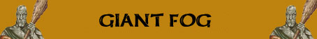

Scagliare Pietre Superiore;

|
|
Ambiente/Habitat | Zone Nebbiose, Acquitrini e Paludi |
| Frequenza | Very Rare | |
| Organizzazione | Solitario, Piccolo Gruppo, Clan | |
| Periodo di Attività | Giorno | |
| Dieta | Carnivora | |
| Intelligenza | Average intelligence (10) | |
| Punti Combattimento | 19 Punti Combattimento | |
| Tesoro | Vedi Sotto | |
| Allineamento Dominante | Neutrale Malvagio | |
| Numero di Apparizione | 1d12: (1-9) 1 (10-12) 1d3+1 | |
| Classe Armatura | 1 [10 base, -7 corazza, -2 destrezza] | |
| Movimento | 10 esagoni | |
| Dadi Vita | 14 | |
| Thac0 | 6 | |
| Numero di Attacchi | Clava di Osso a due mani [(oppure Pugno)] | |
| Danni | 2d10+10 (Botta) [(oppure 1d10+5 (Botta)] | |
| Poteri Offensivi | Istinto Predatorio; Scagliare Pietre Superiore; |
|
| Poteri Difensivi | Nessuno; | |
| Poteri Generici | Visione tra la Nebbia; | |
| Vulnerabilità | Nessuna; | |
| Resistenza alla Magia | Nessuna; | |
| Sensi | Vista Comune; | |
| Dimensioni | Huge (6 m. altezza) | |
| Morale | Champion (15) | |
| Valore in Punti Esperienza | 12035 |
| MODIFICATORI AI TIRI SALVEZZA | |||||||||||||||||||||||
| COR | 0 | 32 | ENV | 0 | 35 | MAG | 0 | 49 | MAL | 0 | 31 | MEN | 0 | 47 | RIF | +5 | 37 | ROB | +5 | 26 | VEL | 0 | 23 |
Descrizione
Un gigantesco
essere di forma umanoide dal colore della pelle visibilmente pallido. Una folta
chioma grigia ricopre la testa, grandi ciglia bianche sormontano gli occhi. Il
resto del viso è glabro, non c'è traccia di peli né intorno al visto, né sul
resto del corpo. Lungo le possenti braccia e le enormi mani si riescono ad
intravedere le vene che diventano evidenti ogni volta che la creatura compie un
qualsiasi sforzo. Le orbite degli occhi sono di un giallo paglierino mentre la
pupilla e di un nero profondo. Un'enorme pelle conciata gli cinge la vita.
Intorno ai piedi sono presenti dei calzari in pelle di fattura grezza.
Combat
Solitamente ogni Gigante delle Nebbie porta con se 2d4+2 massi da poter scagliare contro gli avversari in caso di necessità.
ISTINTO PREDATORIO (Moderate Special Ability): La creatura possiede un forte istinto predatorio, per tale motivo costei riceve un bonus costante di +1 ai suoi tiri per colpire.
SCAGLIARE PIETRE SUPERIORE (Superior Special Ability): In luogo di effettuare attacchi in corpo a corpo questa creatura può scagliare massi sui loro avversari. La creatura può scagliare massi alle seguenti distanze: 30 metri (distanza corta), 60 metri (gittata lunga -2 Thac0), 120 metri (gittata lunga -5 Thac0). Si tratta di un attacco ad un singolo bersaglio che richiede regolare tiro per colpire. Se il tiro per colpire ha successo la vittima subisce 2d8+4 danni da botta.
VISIONE TRA LA
NEBBIA
(Lesser Special
Ability): Questa
creatura è in grado di guardare senza ricevere alcuna penalità tra la nebbia o
la foschia. Il limite massimo di visibilità della creatura sarà, dunque, il
medesimo posseduto dalle altre creature ma fino a quel limite questa creatura
non riceverà alcun modificatore negativo alle proprie azioni per la presenza dei
banchi di nebbia.
Habitat/Society
I giganti delle nebbie vivono in piccole comunità nelle zone più profonde delle paludi areliane. I villaggi contengono poche unità abitative. Le abitazioni sono costruite in pietra semplici ed austere. Al centro del villaggio vi un grande spiazzo, la piazza dove è presente di solito lo scheletro di un enorme animale delle paludi, come simbolo di potenza. Non esiste un vero e proprio capo villaggio, anche se di solito il più anziano tra gli abitanti è chiamato a dirimere le questioni che possono sorgere tra gli abitanti. I nuclei familiari sono sostanzialmente autonomi, ogni famiglia, composta da quattro o cinque elementi è fondamentalmente una piccola tribù, i guerrieri si uniscono solo per le grandi battute di caccia o in caso di imminente pericolo, o per festeggiare matrimoni o nuove nascite.
Ecology
I Fog Giant vivono una vita tranquilla, sono loro che grazie alle dimensioni e forza, decidono quando "movimentarla" con battute di caccia, o razzie nei territori vicini. Vittime preferite dai Giant Fog sono i lizardman, a causa del numero eccessivo e del costante pattugliamento delle paludi che questi fanno. I Fog Giant non esitano ad attaccare, quando ne sono in grado, i Draghi Neri che vivono nelle paludi per depredarli dei loro tesori e per forgiare le loro clave giganti d'osso.
Mystical Resource Sourge (Cuore) Quantità: 1, Presenza 60% - Effetto Particolare: Resistenza e Vigore Fisico - Qualità della Risorsa: Uncommon.
Tesoro
I Giganti delle Nebbie sono creature possenti ed intelligenti. Conoscono il valore degli oggetti preziosi e di quelli in cui la risiede la magia e li collezionano per scambiarli con altre creature intelligenti al fine di ottenere ciò di cui hanno bisogno. A volte capita, dunque che un gigante, essendone molto geloso, porta con se i propri tesori personali in sacche di pelli animali. Segue la tabella del tesoro individuale (già modificata per la taglia) della creatura:
| Tipologia di Tesoro | 13-14 Dadi Vita | Quantità |
| Gemme |
18% |
1d6 gemme |
| Oggetti Preziosi | 18% | 1d12: (1-6) 1 oggetto (7-9) 2 oggetti (10-12) 3 oggetti |
| Oggetti Comuni | 39% | 1 oggetto comune |
| Armi | 26% | 1 arma |
| Armature | 18% | 1 corazza |
| Oggetto Magico |
13%
8% |
1 oggetto magico 1d10: (1-6) common (7-10) rare |
| Monete di platino | 29% | 3d20+4d10 monete di platino |
| Monete d'oro | 50% | 3d100*3+1d100+50 monete d'oro |
| Monete d'argento | 50% | 1d10*6 + 5d10+60 monete di argento |
| Monete di rame | 50% | 1d10*10+1d10+60 monete di rame |